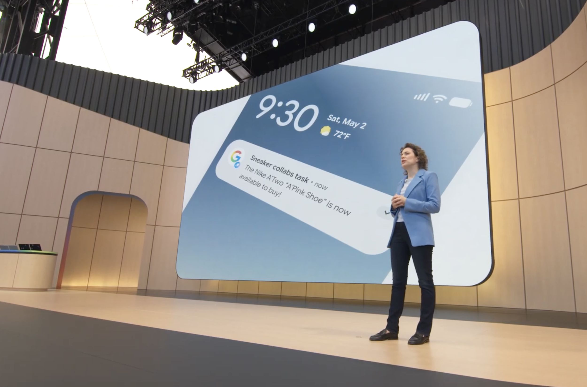

May 2003
Google Alerts
The largest crawler on earth tells you when something new appears. Free, integrated into Search, keyword-driven.
The category exists. It has no consumer name yet.
google.com / alertsPress briefing · May 21, 2026
Google named the category at I/O 2026. The page-monitoring substrate underneath it has existed since 2017.
“When we've done this with ChatGPT, it doesn't not give us answers. It will give us a change of changes. But when we go and manually look it up, it's wrong.”
B2B Manufacturing prospect, May 2026Lineage · five named moments, 23 years
A timeline of when the work of watching what changes became visible, and what each step left unnamed.
Two architectures, side by side
The press told one half of the story. Both halves are required.
Open-web agents
Google Information Agents, ChatGPT Pulse, Exa, Perplexity
Hand it a question or a theme. "Tickets for the Reds on Saturday."
Fan out across millions of pages. Sampling, not surveillance.
Compress what was found into a brief. Some of it is right.
Push notification or morning digest. Wide and shallow.
Input: a topic · Freshness: broad · Verification: model-dependent
Page-monitoring agents
Visualping, Distill, Wachete, Fluxguard
Hand it a specific page. "Watch ticketmaster.com/event/12345."
Every five minutes, hour, or day. The cadence you set, sustained for years.
Visual snapshot, structural diff, AI importance classification. Timestamped.
An auditable record of what changed and when. Narrow and deep.
Input: a URL · Freshness: tight · Verification: source-of-truth
Discovery agents find the page. Page-monitoring agents verify the page. Both feed the next agent. Both are real categories.

May 19, 2026 · Shoreline Amphitheatre
You can put information agents to work for you this summer.
Liz Reid, Google VP of Search · I/O 2026 keynote
What customers said before Google did
Three conversations from the first half of 2026, before Google gave the category a name.
"When we've done this with ChatGPT, it doesn't not give us answers. It will give us a change of changes. But when we go and manually look it up, it's wrong."
B2B Manufacturing prospect · May 2026
"It's quite a varied range of laws we track. A cumbersome exercise trying to monitor everything. We need a tool that can tell us when something changes."
Compliance prospect · March 2026
"We've got multiple project managers all spending time looking at these sites when we could have one person doing that."
Engineering services prospect · March 2026
Try the page-monitoring side
Free plan. No credit card. Two-minute setup. Powered by Visualping, the largest page-monitoring agent in the category.
No FOMO on important changes. The substrate has existed since 2017.